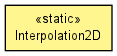

toxi.math
Class Interpolation2D
java.lang.Object
 toxi.math.Interpolation2D
toxi.math.Interpolation2D
public class Interpolation2D
- extends java.lang.Object

Implementations of 2D interpolation functions (currently only bilinear).
|
Method Summary |
static float |
bilinear(double x,
double y,
double x1,
double y1,
double x2,
double y2,
float tl,
float tr,
float bl,
float br)
|
static float |
bilinear(Vec2D p,
Vec2D p1,
Vec2D p2,
float tl,
float tr,
float bl,
float br)
|
| Methods inherited from class java.lang.Object |
equals, getClass, hashCode, notify, notifyAll, toString, wait, wait, wait |
Interpolation2D
public Interpolation2D()
bilinear
public static float bilinear(double x,
double y,
double x1,
double y1,
double x2,
double y2,
float tl,
float tr,
float bl,
float br)
- Parameters:
x - x coord of point to filtery - y coord of point to filterx1 - x coord of top-left cornery1 - y coord of top-left cornerx2 - x coord of bottom-right cornery2 - y coord of bottom-right cornertl - top-left valuetr - top-right valuebl - bottom-left valuebr - bottom-right value
- Returns:
- interpolated value
bilinear
public static float bilinear(Vec2D p,
Vec2D p1,
Vec2D p2,
float tl,
float tr,
float bl,
float br)
- Parameters:
p - point to filterp1 - top-left cornerp2 - bottom-right cornertl - top-left valuetr - top-right valuebl - bottom-left valuebr - bottom-right value
- Returns:
- interpolated value